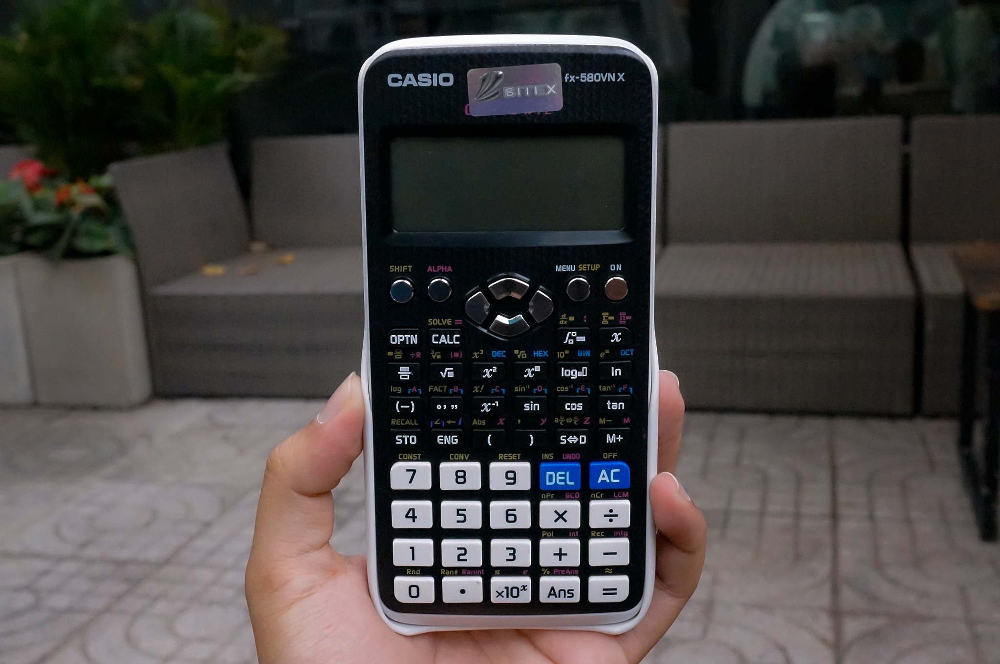

Nhận báo giá rẻ hơn
Blog Chính sách ưu đãi

TOP 5 mẫu máy tính Casio mới nhất hiện nay
Máy tính Casio là vật quan trọng hỗ trợ và gắn liền với tuổi học trò, sinh viên. Đây còn là “cánh tay” đắc lực giúp các sĩ tử vượt qua những kỳ thi khó khăn và đầy thử thách. Vì thế, một chiếc Casio lý tưởng đồng hành là mong muốn của rất nhiều …
Read MoreTOP 5 mẫu máy tính Casio mới nhất hiện nay
Máy tính Casio là vật quan trọng hỗ trợ và gắn liền với tuổi học trò, sinh viên. Đây còn là “cánh tay” đắc lực giúp các sĩ tử vượt qua những kỳ thi khó khăn và đầy thử thách. Vì thế, một chiếc Casio lý tưởng đồng hành là mong muốn của rất nhiều …
Read More